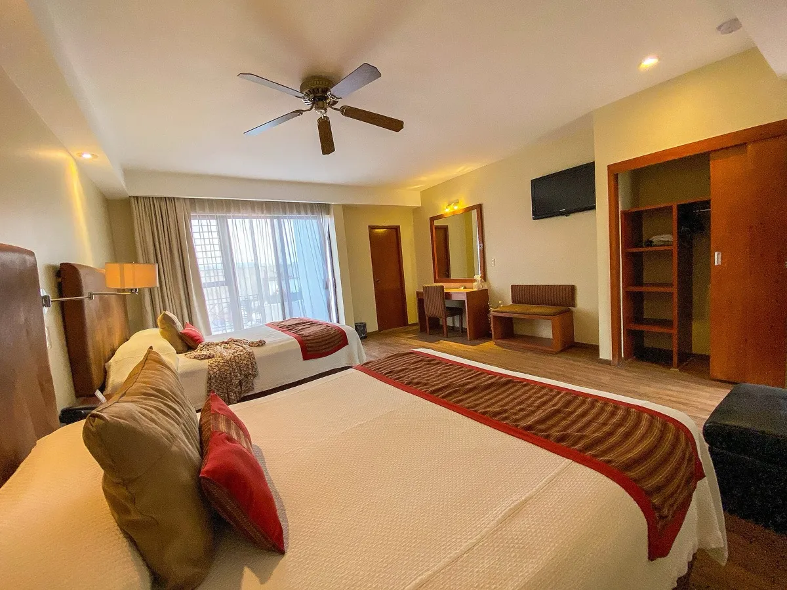
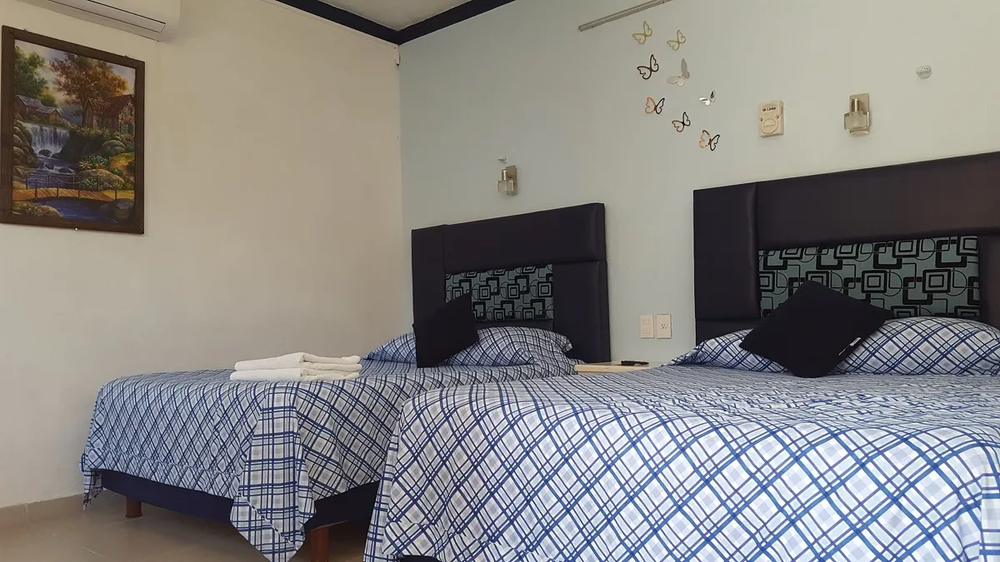

Tarjetas NFC para hoteles, hostales y Airbnb: Wi‑Fi, atención y reseñas en un toque
Cómo usar tarjetas NFC en hoteles, hostales y rentas de Airbnb para compartir el Wi‑Fi, atender por WhatsApp y conseguir más reseñas en Google y TripAdvisor.

En resumen
- En hospedaje las reseñas pesan más: el huésped no conoce la zona y decide por lo que escribieron otros.
- Coloca cada tarjeta en su momento: Wi‑Fi y WhatsApp al llegar, reseñas al salir.
- En Airbnb, huésped y anfitrión tienen 14 días después del check‑out para evaluarse; la tarjeta funciona como recordatorio.
- Para viajeros extranjeros, usa frases bilingües junto a la tarjeta.
Contenido del artículo
- Por qué las reseñas pesan tanto en hospedaje
- Las tarjetas a lo largo de la estancia
- Wi‑Fi sin dictar contraseñas
- Hoteles y hostales: Google y TripAdvisor
- Airbnb y rentas vacacionales
- Atención por WhatsApp: menos llamadas, más tranquilidad
- Kit recomendado según el tamaño
- Conclusión
- Preguntas frecuentes
- Fuentes y referencias
En hospedaje, la reputación se construye huésped por huésped. Un hotel boutique en Oaxaca, una casa vacacional en Tulum o un departamento en Airbnb en la Roma compiten por las mismas personas, y esas personas deciden leyendo opiniones en Google, TripAdvisor y Airbnb. Al mismo tiempo, el huésped hace siempre las mismas preguntas: ¿cuál es el Wi‑Fi?, ¿a quién le escribo si algo falla?, ¿dónde dejo mi opinión? Las tarjetas NFC resuelven las tres con un toque. En esta guía te mostramos cómo usarlas en cada punto de la estancia.
Por qué las reseñas pesan tanto en hospedaje
En la encuesta 2026 de BrightLocal, el 97% de los consumidores dijo leer reseñas de negocios locales y el consumidor promedio usa seis sitios de reseñas distintos. En viajes, ese comportamiento se multiplica: el huésped no conoce la zona, no puede «darse una vuelta» antes de reservar y depende casi por completo de lo que escribieron otros viajeros.
Por eso el objetivo no es solo tener buenas calificaciones, sino tener muchas y recientes en cada plataforma donde te encuentran.
Las tarjetas a lo largo de la estancia
| Momento | Dónde | Tarjeta |
|---|---|---|
| Llegada | Recepción o mesa de entrada | Wi‑Fi y WhatsApp de atención |
| Durante la estancia | Habitación, junto a la TV o el escritorio | Wi‑Fi, WhatsApp e Instagram |
| Restaurante o bar | Carpeta de la cuenta | Reseñas de Google |
| Salida | Recepción o junto a la puerta | TripAdvisor, Google o Airbnb |
Wi‑Fi sin dictar contraseñas
Es la pregunta número uno de cualquier huésped. Una tarjeta de Wi‑Fi en la habitación evita llamadas a recepción y mensajes a las 11 de la noche. En iPhone, la cámara reconoce el código QR de Wi‑Fi y ofrece unirse a la red; en Android, la cámara o el lector de QR del sistema hacen lo mismo, y en muchos equipos basta el toque NFC. Dos recomendaciones:
- Usa una red de invitados separada de la red de tu administración y tus cámaras.
- Si cambias la contraseña entre temporadas, recuerda que necesitarás tarjetas nuevas.
Más detalles en cómo compartir el Wi‑Fi con tus clientes sin dar la contraseña.
Hoteles y hostales: Google y TripAdvisor
Para un hotel, Google Maps y TripAdvisor son las dos vitrinas más importantes. La clave es pedir la opinión al final, cuando el huésped ya vivió la experiencia completa:
- Al hacer el check‑out, el recepcionista muestra la tarjeta: «Si disfrutaste tu estancia, acerca tu celular y déjanos tu opinión».
- En el restaurante del hotel, la tarjeta de Google va en la carpeta de la cuenta.
- Para viajeros extranjeros, usa una frase bilingüe: «Tap your phone / Acerca tu celular».
Recuerda que tanto Google como TripAdvisor prohíben ofrecer incentivos a cambio de opiniones. Invita a todos los huéspedes por igual.
Airbnb y rentas vacacionales
En Airbnb las reseñas funcionan distinto. Según el Centro de ayuda de Airbnb, al terminar la estancia la plataforma invita al huésped y al anfitrión a evaluarse, y ambos tienen 14 días después del check‑out para hacerlo. Las evaluaciones se publican cuando los dos la envían o cuando termina ese plazo.
Eso significa que la reseña se escribe desde la app de Airbnb, no desde una página externa. Entonces, ¿para qué sirve una tarjeta?
- Como recordatorio elegante: en el libro de bienvenida o junto a la puerta, recuerda que su opinión importa.
- Para volver a reservar: la tarjeta abre tu anuncio y el huésped puede guardarlo en favoritos para su próximo viaje.
- Para tus otras vitrinas: si tu propiedad tiene perfil en Google o Instagram, una tarjeta para cada uno suma visibilidad fuera de Airbnb.

Atención por WhatsApp: menos llamadas, más tranquilidad
Una tarjeta de WhatsApp en la habitación abre un chat con recepción o con el anfitrión sin que el huésped guarde ningún número. Puedes configurarla con un mensaje inicial como «Hola, estoy en la habitación…». Para un anfitrión de Airbnb, sirve para resolver dudas rápidas; para un hotel, para pedir toallas, room service o un taxi.
Kit recomendado según el tamaño
| Tipo de hospedaje | Kit sugerido |
|---|---|
| 1 departamento o casa en Airbnb | 1 Wi‑Fi + 1 Airbnb (paquete de 2 de cada una si quieres una de respaldo) |
| Varias propiedades | 1 Wi‑Fi y 1 Airbnb por propiedad, cada una con su enlace |
| Hotel boutique (hasta 15 habitaciones) | Wi‑Fi por habitación + 2 Google + 2 TripAdvisor en recepción |
| Hotel mediano | Paquetes de 10 de Wi‑Fi, más Google y TripAdvisor en recepción, restaurante y bar |
Para más de 10 tarjetas, escríbenos y cotizamos mayoreo.
Conclusión
En hospedaje, cada huésped satisfecho es una reseña en potencia y cada pregunta repetida es tiempo perdido. Con tarjetas NFC de Wi‑Fi, WhatsApp y reseñas colocadas en los momentos correctos de la estancia, resuelves ambas cosas: das una mejor experiencia y conviertes esa experiencia en reputación. Si además tienes restaurante, revisa nuestras 12 ideas para restaurantes.
Preguntas frecuentes
¿Cuánto tiempo tiene un huésped de Airbnb para dejar su reseña?
Según el Centro de ayuda de Airbnb, huésped y anfitrión tienen 14 días después del check‑out para escribir su evaluación.
¿Qué tarjetas necesita un hotel pequeño?
Una de Wi‑Fi por habitación y un par de tarjetas de reseñas de Google y TripAdvisor en recepción y en el restaurante suelen ser suficientes para empezar.
¿Las tarjetas funcionan con celulares extranjeros?
Sí. El NFC y el código QR funcionan igual con celulares de cualquier país.
¿Puedo ofrecer un descuento a cambio de una reseña?
No. Google, TripAdvisor y Airbnb prohíben los incentivos a cambio de reseñas. Invita a todos tus huéspedes por igual.
Fuentes y referencias
- Cómo funcionan las evaluaciones — Centro de ayuda de Airbnb
- Local Consumer Review Survey 2026 — BrightLocal
- Consejos para obtener más reseñas de Google — Ayuda de Perfil de Empresa de Google
- Barcode Contents: Wi-Fi Network config — ZXing (proyecto de código abierto)
Las marcas mencionadas pertenecen a sus respectivos dueños. Las imágenes provienen de Wikimedia Commons y se usan según su licencia libre, indicada en cada pie de foto.
Diseñamos y programamos tarjetas NFC con código QR para negocios de todo México. Escribimos estas guías con base en la documentación oficial de Google, Apple y Android y en lo que aprendemos todos los días con nuestros clientes.
Contáctanos · Cómo funcionan nuestras tarjetas